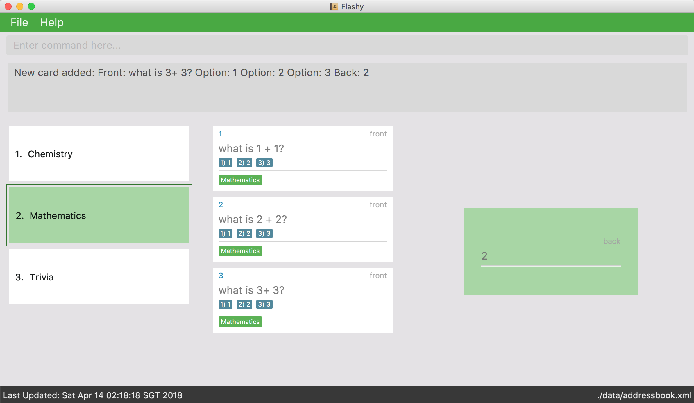

Overview
Flashy is an application to help users organise their flashcards to help them memorise better.
Summary of contributions
-
Major enhancement: added the ability to automatically schedule and answer flashcard
-
What it does: correctly approximate the forgetting curve to remind user when is the best time to study
-
Justification: This feature is core to flashcard memorisation technique. Spaced repetition for better memory.
-
Highlights: This enhancement affects existing commands and commands to be added in future. It required an in-depth analysis of design alternatives. The implementation too was challenging as it required changes to existing commands.
-
-
Minor enhancement: added a simple Tag functionality that was eventually changed into CardTag Association.
-
Code contributed: [Functional Code] [Test Code]
-
Other contributions:
-
Project management:
-
Added issues and milestones.
-
-
Enhancements to existing features:
-
Documentation:
-
Tools:
-
Personal pull and push scripts to Github.
-
-
Contributions to the User Guide
Given below are sections I contributed to the User Guide. They showcase my ability to write documentation targeting end-users. |
Introduction
Flashy — lightning fast flashcard management.
|
What are flashcards? Traditional flashcards are physical cards, used to aid in memorization. Each card has two sides: the front contains the question prompt, and the back contains the answer prompt. |
Flashy is an application to help users organise their flashcards to help them memorise better. Physical flashcards are bulky and hard to search for. They are also difficult to organise. Flashy is the result of our desire to eliminate these challenges that arise from the use of conventional flashcards. Flashy helps you organise your flashcards with a powerful tagging system. Flashy is able to retrieve all flashcards of a given tag in a flash.
As students, we understand that planning out studying sessions is hard. Therefore, we have also built into Flashy an intelligent scheduler, so you can focus on studying, instead of planning your study sessions. Our scheduler uses spaced repetition, which has been shown to be effective for studying.
Spaced Repetition embodies the idea behind the phrase "don’t burn the midnight oil". Spreading out study sessions is
shown to be more effective than cramming multiple sessions in a single night.
To learn more, head over to https://en.wikipedia.org/wiki/Spaced_repetition
|
Although Flashy was built for the language learner in mind, it should prove useful for any student, as new studying tool in their arsenal.
Flashy is optimized for those who prefer to work with a Command Line Interface (CLI) while still having the benefits of a Graphical User Interface (GUI). Fast typists will find that Flashy can get their flashcard management tasks done faster than traditional GUI apps.
Interested? Jump to the Quick Start to get started.
How to Use This Guide
This document is designed for users with varying levels of technical proficiency. Most portions of this guide can be read standalone, with occasional references.
To aid in your understanding of our product, we have devised various scenario-based uses, along with detailed instructions. So do not be afraid to read the manual!
We use admonition blocks to draw your attention to blocks of information. Here are the icons used and their meanings:
| Information that is not crucial, but is useful to know. |
| Snippets of information that can be very helpful. |
| Important information that should not be skimmed over. |
| Important information about our product, where potentially issues may occur. |
Quick Start
We value our time as much as yours. Here is what you need to get up and running.
Installation
-
Ensure you have Java version
1.8.0_60or later installed in your computer.Having any Java 8 version is not enough.
This app will not work with earlier versions of Java 8. -
Download the latest
flashy.jarhere. -
Copy the file to the desktop.
-
Double-click the file to start the Flashy. The GUI should appear in a few seconds.
Typing helpand pressing Enter will open the help window. Refer to [Features] for details of each command.
These are some of the more common commands that you’ll encounter in Flashy. Feel free to try them out!
Using flashcards
After adding and managing your flashcards, its time to get your A+! This section will teach you how to let Flashy’s intelligent scheduling algorithm prompt you the best time to study!
Showing a flashcard : showdue
To study effectively, you have to know which cards are more worth it to read first.
Luckily Flashy’s intelligent scheduler takes care of these things for you.
showdue helps you filter out cards that are due by a certain date.
|
These dates are usually automatically scheduled by the Spaced Repetiton algorithm. You do not have to worry about scheduling yourself as Flashy will do it for you! But you could manually do it if you want to, take a look at the Schedule command. |
Format: showdue d/DAY m/MONTH y/YEAR
showdue can be used without any options, this will just show the flashcards due by today.You can omit some parameters in showdue. suppose today is 13/04/2018,
parameters that you omit would be implicitly assumed to be the current day, month or year.
If you key in showdue d/28 without typing in m/04 y/2018,
the month and year are assumed to be the current month.This would show you card due before 28/04/2018.
|
Examples:
-
showdue d/28 m/04 y/2018
Show cards due before 28/04/2018 -
showdue d/28
Suppose today is 13/04/2018, althoughm/04 y/2018is not typed, they are implicitly assumed to be the current month and year.
Answering flashcards: answer
After using showdue to show a list of flashcards, you have to select a card to answer.
You can select a card with the selectc command.
You can also simply click on the flashcard.
answer uses our Spaced Repetition algorithm to intelligently schedule the card to the right time in the future for review.
Format: answer c/CONFIDENCE_LEVEL
|
CONFIDENCE_LEVEL can only be 0, 1 or 2. Card must be selected first before answering. To learn how to select a card, take a look at selectc |
What does CONFIDENCE_LEVEL mean?
-
answer c/0Again
I don’t know the answer to this card. Card will then be requeued into the same session again. -
answer c/1Passable
I think I know the answer, but need more practice. Card will then be scheduled for the near future. To get more practice. -
answer c/2Easy A+
Card will then be scheduled further into the future. Other cards need more review than this one.
|
This gives feedback to the scheduler algorithm to automatically schedule the card for review at a time when it thinks you are likely to forget it. This design is based off the well known forgetting curve, you can read more about it here https://en.wikipedia.org/wiki/Forgetting_curve |
Show flashcards for review: Schedule
Using the answer command to answer a flashcard will automatically schedule the card based on our spaced repetition algorithm.
However, if you want to manually schedule a card for review by a certain date, you can do so as well.
Format: schedule d/DAY m/MONTH y/YEAR
| Card must be selected first before scheduling. To learn how to select a card, take a look at selectc |
schedule can be used without any options, this will just schedule the cards for today.You can omit some parameters in schedule. suppose today is 13/04/2018,
parameters that you omit would be implicitly assumed to be the current day, month or year.
If you key in schedule d/28 without typing in m/04 y/2018,
the month and year are assumed to be the current month.This would schedule the card for 28/04/2018.
|
Examples:
-
schedule d/28 m/04 y/2018
Schedule card for 28/04/2018 -
schedule d/28
Suppose today is 13/04/2018, althoughm/04 y/2018is not typed, they are implicitly assumed to be the current month and year.
Contributions to the Developer Guide
Given below are sections I contributed to the Developer Guide. They showcase my ability to write technical documentation and the technical depth of my contributions to the project. |
Scheduling, Answering and Showdue
The core component of how spaced repetition works is that it keep tracks of how good the user is with a certain card. Our scheduling algorithm is an implementation of the well known SM2 algorithm used by Supermemo, another flashcard app.
The main idea of how this is done is to keep a score of how good a user is with a certain card, a Schedule class is created.
Each card has its own Schedule object. There are some functions to allow the user to update
the score of the card after each time the user has answered it.
There are many possible ways how this could have been implemented. However this document will try to walk you through the most difficult parts and talk about some note worthy mentions.
The Schedule object in each card is different from the ScheduleCommand
|
To interface with this Schedule object, answer, schedule and showdue command has been added.
-
answer-
Answers the card and update a score
-
This also set date for future review.
-
-
schedule-
Allows one to manually set review date
-
-
showdue-
Show cards due by a certain date to allow for effective studying.
-
Spaced Repetition Implementation
Schedule is implemented as an object in a Card.
Schedule contains a java.time.LocalDateTime which can be used to filter and order the cards.
showdue uses LocalDateTime to filter out and sort cards that are due by a certain date.
The feedbackRouterHandler(int confidenceLevel) function is the main part making the whole Scheduler system work.
feedbackRouterHandler(int confidenceLevel) will take in a confidence level 0, 1 or 2. 0 meaning worse, 2 meaning best.
-
0 move to back of queue, does not update internal score.
-
1 move to back of queue, updates internal score as a failure.
-
2 remove from queue, updates internal score as a success.
This will allow Schedule to gauge a user’s familiarity with a card and schedule review times appropriately.
How Schedule approximate forgetting curve
This part will go into the specifics of what a score means and how it is calculated. This class has some math and many variables, here is a short reference for their meaning if they are not self evident.
-
lowerBoundRememberRatedefault = 0.85. The percent of information we want users to retain. -
learningPhasedefault = 3. The number of days we denote as a learning phase. -
lastIntervaldefault = 1. The last interval given to schedule a review. -
easingFactordefault = 1.3. How easy is it for the user to remember a fact, the larger this number the easier it is. -
historicalEasingFactorthe cumulative form ofeasingFactor
Here is a simple summary of what is happening internally.
\(newEasingFactor = historicalEasingFactor * \frac{\log{(lowerBoundRememberRate)}}{\log{(successRate)}}\)
Initially when the user first creates a card, we give then a grace period with learningPhase. During this period we do not want to penalise the user for mistakes as this is a grace period for the user to pick up new cards. Penalising would be irritating and might demotivate learning.
Any feedback within this period will not update the easingFactor, feedback will only update after the learning phase.
The newEasingFactor is dependent on \(\log{(successRate)}\).
Suppose we want the user to retain 85% of the information learnt.
We set the lowerBoundRememberRate to 0.85.
If successRate < lowerBoundRememberRate newEasingFactor will reduce and card will be scheduled more frequently.
If the interval is too long, users might forget cards. Thus lowering the easingFactor and intervals will reduce.
A predicate filter is used in conjunction with Schedule class to retrieve a list of cards due for review.
Answer
Logic
AnswerCommand and AnswerCommandParser has a similar logic implementation to most commands.
answer c/0.Date parser for showdue and schedule
We presume that users would often want to review lists of flashcards, thus these are very frequently typed. It would be very irritating if users had to constantly key in showdue d/14 m/4 y/2018 when its obviously just today’s date. Thus we designed these commands to be more intelligence and less strict about its input parameters.
Whichever field d/ m/ y/ are not present, it will be assumed to be today’s day, month or year.
So doing showdue without any parameters will just return cards due by today.
Initially any typos or errors made would just assume users would like to get cards due by today.
However some users find this flexibility to be a bug, now we strictly enforce that showdue must be empty to return today’s cards.
|
Although only showdue is talked about. This is actually a generic date parser. schedule command uses the same thing.
|